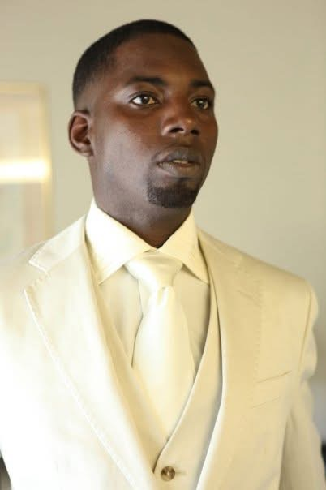

Meet Antoine Montgomery: The Master Candle Maker
A Legacy of Craftsmanship and Innovation
Antoine Montgomery is not just a candle maker—he is a master of his craft. With years of dedication, passion, and hands-on experience, Antoine has perfected the art of candle making, creating luxurious, high-quality products that captivate the senses and elevate any space. His journey is one of perseverance, artistry, and an unwavering commitment to excellence.
From Passion to Mastery
Antoine’s fascination with candle making began as a simple interest, but it quickly evolved into an obsession with the science and beauty behind each flickering flame. Through extensive research, relentless practice, and an insatiable drive to refine his techniques, he transformed his passion into a thriving business. Today, he stands as a one-man powerhouse, meticulously handcrafting every candle without the reliance on mass production teams—an unparalleled commitment to authenticity and quality.
The Art of Customization
At the core of Antoine’s work is a deep understanding that no two candles should be alike. His ability to customize candles to suit individual preferences—be it through scent, wax type, color, or burn time—sets his brand apart. Whether you seek an aromatherapy experience, a statement piece for your home, or a meaningful gift, Antoine ensures that each creation is a masterpiece tailored to your desires.
Excellence in Every Flame
Antoine’s candles are not just products; they are an experience. Crafted with only the finest ingredients, including premium soy, beeswax, and coconut wax blends, each candle is designed for a cleaner, longer, and more sustainable burn. His meticulous attention to detail, from wick selection to fragrance blending, ensures that every candle embodies sophistication and high performance.
Serving Luxury Markets
From high-end hotels and restaurants to elite clientele, Antoine’s work has found its place in some of the most prestigious settings. Churches, funeral homes, A-listers, entertainers, and luxury brands trust his craftsmanship to enhance their environments. His reputation for delivering excellence has solidified his standing as a premier candle artisan.
A Commitment to Education and Growth
Beyond his personal artistry, Antoine is dedicated to empowering others with the knowledge of candle making. Through specialized workshops, private sessions, and curated content, he shares his expertise with aspiring candle makers, helping them navigate the intricate world of wax, wicks, and fragrances. His mission extends beyond selling candles—he seeks to inspire and educate.
Experience the Difference
Antoine Montgomery’s candles are more than just a source of light; they are a testament to artistry, passion, and an unyielding commitment to quality. When you purchase an Antoine Montgomery candle, you are investing in a handcrafted, one-of-a-kind creation, made with love, precision, and an artist’s touch.
Indulge in the craftsmanship. Experience the excellence. Welcome to the world of Antoine Montgomery, the Master Candle Maker.